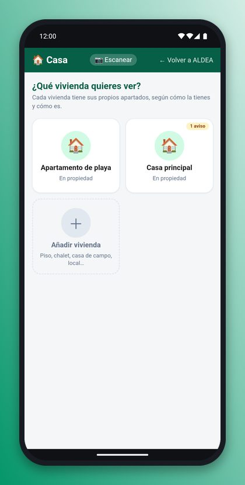
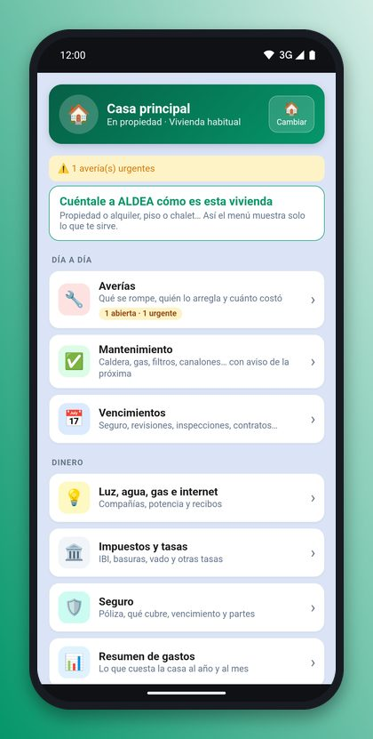
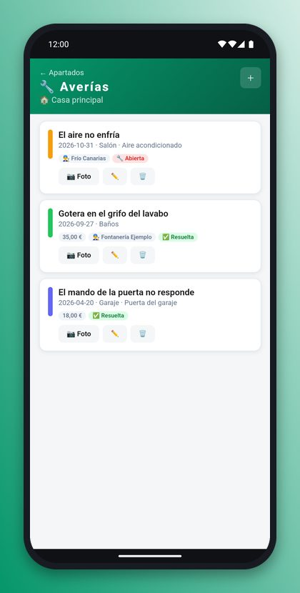
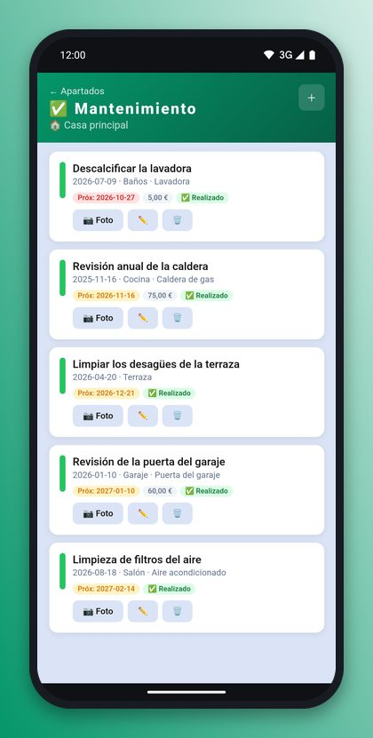
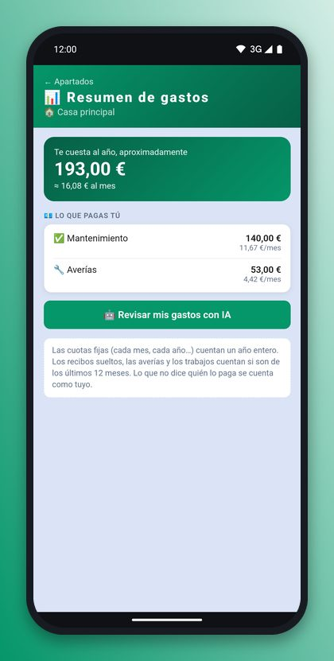

🎬 Míralo en vídeo
Menos de un minuto, con voz. Los datos que salen son de ejemplo.
📱 Así se ve





Capturas con datos de ejemplo. Toca una para verla en grande; pasan solas (se paran mientras la miras).
Casa funciona como Salud: primero eliges la vivienda y después ves sus apartados, agrupados. Lo que aparece depende de cómo es cada vivienda.
- Toca Añadir vivienda (o, en una que ya tengas, ⚙️ Cómo es esta vivienda) y contesta cuatro preguntas: cómo la tienes (en propiedad, con hipoteca, de alquiler, la alquilas a otros o cedida), qué tipo es (piso, ático, bajo, adosado, chalet, casa de pueblo, de campo o local), para qué la usas (habitual, segunda residencia o vacía) y qué tiene (comunidad, ascensor, jardín, piscina, pozo, fosa séptica, placas, gasoil, leña, garaje, alarma…). Al elegir el tipo se marca lo más normal; puedes cambiarlo.
- El menú muestra solo lo que le toca: si vives de alquiler, Alquiler y Avisos al casero; en una casa de campo, Pozo y saneamiento y Energía y combustible; en un piso, Comunidad. Con 🧩 Elegir qué apartados se muestran ocultas lo que no uses (no se borra nada).
| Grupo | Apartados |
|---|---|
| Día a día | Averías · Mantenimiento · Avisos al casero · Visitas a la casa (segunda residencia o vacía) · Vencimientos |
| Dinero | Luz, agua, gas e internet · Hipoteca · Alquiler · Inquilinos y cobros · Impuestos y tasas · Seguro (póliza y partes) · Suscripciones y cuotas · Resumen de gastos |
| Comunidad | Comunidad de vecinos (cuota, derramas, juntas y actas) · Mantenimiento de la comunidad (ascensor, inspección del edificio) |
| La casa | Zonas y elementos · Inventario · Medidas · Jardín y plantas · Piscina · Pozo y saneamiento · Energía y combustible · Llaves y seguridad |
| Papeles | Papeles de la familia · Documentos · Contactos · Datos de la vivienda (Catastro) |
- En cada gasto, avería o mantenimiento puedes indicar ¿Quién lo paga?: tú, el casero (o el inquilino), la comunidad o el seguro. Así ves qué reclamar y qué te toca a ti.
- Un gasto se apunta como cuota fija (cada mes, cada año…) o como recibo suelto, pero no de las dos formas, para no contarlo dos veces. El Resumen de gastos suma lo que te cuesta la casa al año y al mes, lo que pagan otros y lo que cobras si la alquilas.
- Vencimientos junta todas las fechas (el seguro, el fin del contrato, las revisiones, la inspección del edificio, el vaciado de la fosa…) y lo que esté sin resolver.
- Suscripciones y cuotas (móvil, plataformas, gimnasio…): apunta cuánto cuesta cada una, cada cuánto se paga, cuándo se renueva y cómo darte de baja. La renovación sale en Vencimientos y el coste, en el Resumen de gastos.
- Papeles de la familia: el DNI, el pasaporte, el carné de conducir… de cada persona, con su fecha de caducidad (sale en Vencimientos) y dónde está guardado. No hace falta apuntar el número; la foto, si quieres, en Documentos. Este apartado y el de suscripciones salen solo en la vivienda donde vives.
- Jardín y plantas sale en todas las viviendas: sin jardín sirve para las plantas de casa y de la terraza.
- Datos de la vivienda: con la referencia catastral (está en el recibo del IBI) y 🏛️ Buscar, el Catastro rellena superficie, año, uso y coordenadas (necesita internet). También 🗺️ Ver en el mapa y 🏛️ Ver en el Catastro.
- Si tienes varias viviendas, al escanear un documento desde el portal ALDEA te pregunta en cuál guardarlo.
- En Llaves y seguridad apunta quién tiene copia de las llaves; no escribas códigos ni contraseñas.